Cómo leer y usar el Comparativo de Cultivos
Esta guía explica, pantalla por pantalla, qué muestra el dashboard, cómo se calcula cada número y qué podés hacer con él. Las capturas son del dashboard real en modo anónimo: las empresas aparecen con su código (por ejemplo, Empresa SA). Los números en círculos naranjas de cada captura se explican en la lista que va abajo.
1Qué es y de dónde salen los datos
El dashboard compara los márgenes brutos agrícolas de los clientes de Synagro por empresa, sub-zona, zona y región. Lo puede abrir cualquiera con el link, sin cuenta de Google y sin instalar nada.
- Fuente: los archivos Excel que los asesores suben a la carpeta de Drive de Synagro (hoja Base Cultivos, una fila por lote). Los costos salen del informe Comparativo entre Lotes de Synagro 7, en dólares.
- Se suman todos los archivos de la carpeta. Si dos archivos traen la misma empresa, cultivo y campaña, gana el más reciente. Así se pueden ir agregando campañas, cultivos y clientes nuevos sin pisar lo anterior.
- Los nombres de los clientes nunca viajan al público. El servidor reemplaza la empresa por su código (columna Abreviatura del Excel), y los establecimientos y lotes por números, antes de mandar los datos a la página.
- Todos los valores están en u$s por hectárea y todos los promedios son ponderados por superficie: una empresa de 2.000 ha pesa más en el promedio que una de 200 ha.
2Un vistazo a la pantalla
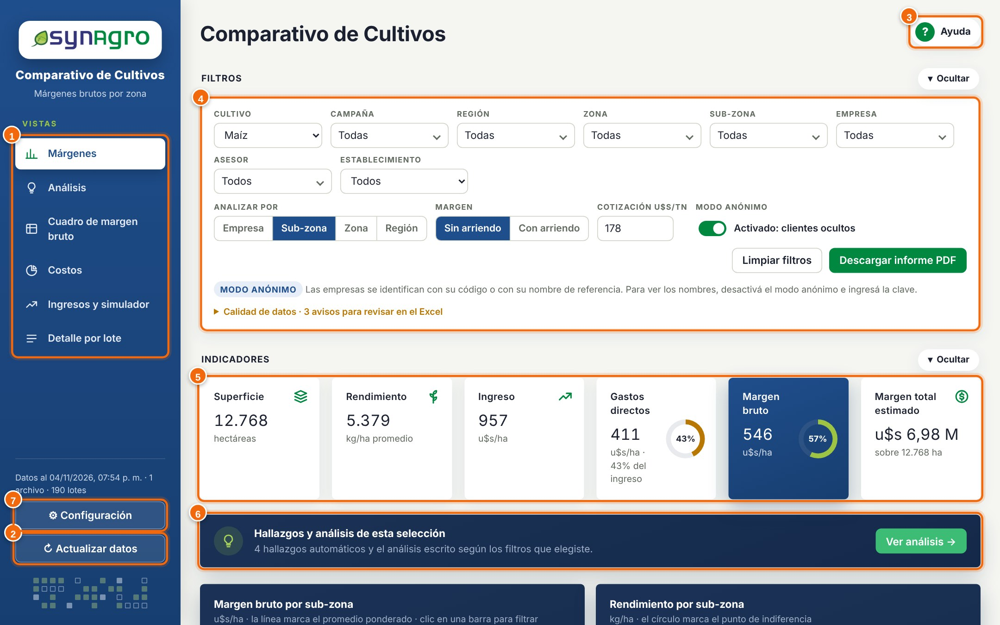
- Vistas. El menú azul de la izquierda cambia lo que se ve abajo de los indicadores: Márgenes, Análisis, Análisis por Cliente, Cuadro de margen bruto, Costos, Ingresos y simulador, y Detalle por lote. Los filtros valen para todas las vistas.
- Actualizar datos. Arriba del botón dice la fecha de los datos, cuántos archivos se leyeron y cuántos lotes hay. El botón vuelve a leer la carpeta de Drive (ver sección 13).
- Ayuda. Abre este instructivo.
- Filtros. Eligen qué se analiza: cultivo, campaña, región, zona, sub-zona, empresa, asesor y establecimiento, y cómo se analiza (ver sección 3).
- Indicadores. Los números clave de la selección (ver sección 4).
- Hallazgos y análisis. Un acceso directo a la vista Análisis, que escribe sola las conclusiones de lo que filtraste.
- Configuración. Para elegir con qué filtros arranca el dashboard cada vez que lo abrís, copiar tu link personal y, con la clave, administrar las empresas (ver sección 14).
3Filtros
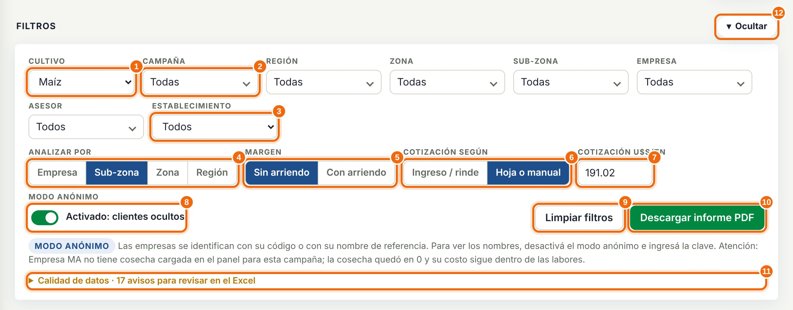
- Cultivo. Uno por vez (Maíz, Soja, Trigo, Poroto, Tabaco, Caña de Azúcar, Garbanzo). Si un cultivo todavía no tiene datos, la página lo avisa.
- Campaña, Región, Zona, Sub-zona, Empresa y Asesor. Permiten elegir varios valores a la vez: se abre una lista con casillas. Marcá las que quieras; «Todas» limpia ese filtro. Ver la captura de abajo.
- Establecimiento. Uno por vez. La lista muestra solo los establecimientos de las empresas elegidas.
- Analizar por. Define qué es cada barra de los gráficos y cada columna del cuadro: Empresa, Sub-zona, Zona o Región. Ejemplo: con «Sub-zona» ves una barra por sub-zona con el promedio ponderado de sus empresas. El dashboard arranca en «Sub-zona», salvo que hayas guardado otra opción en Configuración.
- Margen. Sin arriendo = margen bruto (ingreso − gastos directos). Con arriendo = margen bruto − arriendo. Cambia todos los gráficos, el ranking, los textos y el PDF (ver más abajo).
- Cotización según. De dónde sale el precio: Hoja o manual (así arranca) o Ingreso / rinde, el precio que surge del ingreso cargado en cada lote (ver más abajo).
- Cotización u$s/tn. Muestra la cotización que se está usando. Si escribís otra, el dashboard pasa a «Hoja o manual» con ese valor (ver más abajo).
- Modo anónimo. Activado, se ven códigos; desactivado (con clave), los nombres reales (ver más abajo).
- Limpiar filtros. Vuelve todo a «Todas/Todos». No toca el cultivo, la cotización (ni de dónde sale) ni el modo anónimo. Si guardaste una configuración, al lado aparece el botón Mi configuración, que la vuelve a aplicar (ver la captura de abajo).
- Descargar informe PDF. Arma el informe con formato Synagro de lo que estás viendo (ver sección 12).
- Calidad de datos. Avisos sobre el Excel para corregir (ver sección 13).
- Ocultar. Pliega el bloque de filtros.
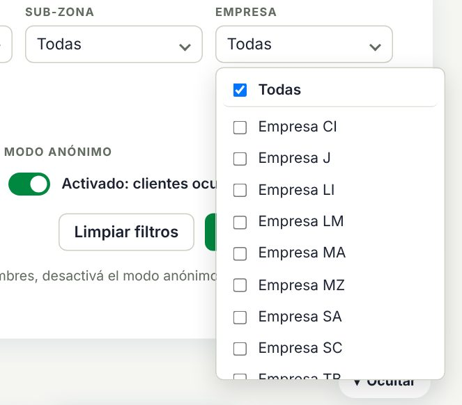
Cotización y arriendo
- Cotización según: Hoja o manual (así arranca el dashboard). Todos los lotes usan el mismo precio: el de la hoja Cotizacion del Excel para ese cultivo y campaña (precio estimativo en dólares por tonelada, promedio CAC-BCR), o el que escribas en el casillero. Si una campaña no tiene cotización, se usa la última conocida y la página lo avisa.
- Cotización según: Ingreso / rinde. Cada lote usa el ingreso cargado en la columna Ingreso de la base (u$s/ha). La cotización de cada empresa, sub-zona, zona o región sale de la cuenta ingreso ÷ rinde × 1.000 (u$s/tn), con promedios ponderados por hectárea. Así, cada columna del cuadro muestra el precio al que realmente se calculó ese ingreso, y puede ser distinto en cada empresa.
- Lotes sin ingreso: con «Ingreso / rinde», los lotes que tienen el ingreso en 0 se calculan con la cotización de la hoja. Abajo del cuadro se indica cuántos lotes están en esa situación.
- Para probar otro precio, escribilo en el casillero. El dashboard pasa solo a «Hoja o manual», todo se recalcula al instante y aparece el link «Usar la de la hoja» para volver al valor original. Si volvés a «Ingreso / rinde», el valor que escribiste queda guardado para cuando vuelvas a «Hoja o manual». El precio que escribas no se guarda para los demás: es solo para tu pantalla.
- Con qué opción arranca el dashboard se puede cambiar en Mis preferencias.
- Arriendo: se toma, en este orden, el valor cargado en el panel de administración y, si no hay, el de la hoja Arriendo. El arriendo puede variar por sub-zona; en una empresa con varias sub-zonas se pondera por hectárea. El arriendo nunca forma parte de los gastos directos: solo se resta al elegir «Con arriendo». Un asterisco (*) indica un valor cargado a mano en el panel.
Modo anónimo
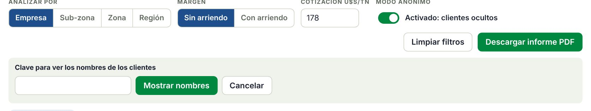
- Activado (así arranca siempre): cada empresa aparece como «Empresa» + su código (por ejemplo Empresa SA), o con el nombre de referencia que se le haya puesto en el panel de administración. Los establecimientos se ven como Empresa SA · Est. 1 y los lotes como Lote 12.
- Desactivado: la página pide la clave. Con la clave correcta se ven los nombres reales y aparece el botón Administrar empresas, que abre esa parte de Configuración. El acceso dura 30 minutos o hasta cerrar la pestaña.
4Indicadores
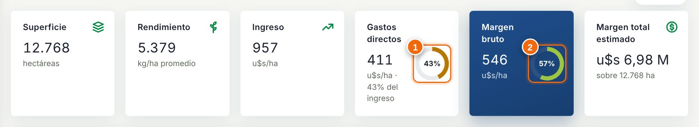
| Tarjeta | Qué muestra |
|---|---|
| Superficie | Hectáreas sembradas de la selección. |
| Rendimiento | Rinde promedio en kg/ha, ponderado por superficie. |
| Ingreso | En u$s/ha. Con «Hoja o manual»: rendimiento × cotización ÷ 1.000. Con «Ingreso / rinde»: el ingreso cargado en la base (los lotes sin ingreso, con la hoja). |
| Gastos directos | Total de labores, tareas, cosecha e insumos en u$s/ha. El anillo ① dice qué % del ingreso se va en gastos. |
| Margen bruto | Ingreso − gastos directos. El anillo ② es el % del ingreso que queda como margen. Los anillos suman 100%. |
| Margen total estimado | Margen × hectáreas de cada empresa, sumado: cuántos dólares deja la selección en total. |
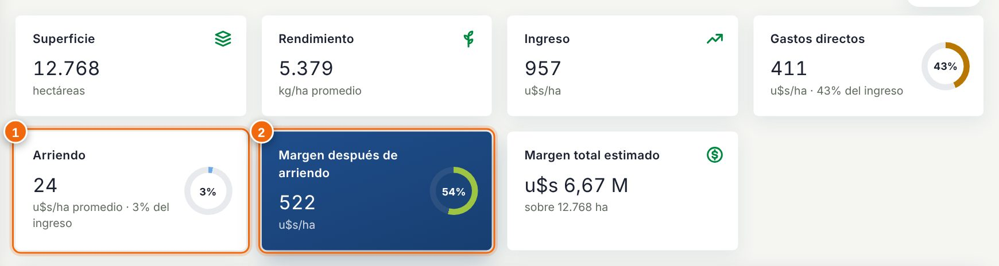
- Arriendo. Promedio en u$s/ha sobre toda la superficie de la selección: las empresas sin arriendo cuentan como 0. El anillo es el % del ingreso.
- Margen después de arriendo. Margen bruto − arriendo. Ahora los tres anillos (gastos + arriendo + margen) suman 100% del ingreso.
5Márgenes
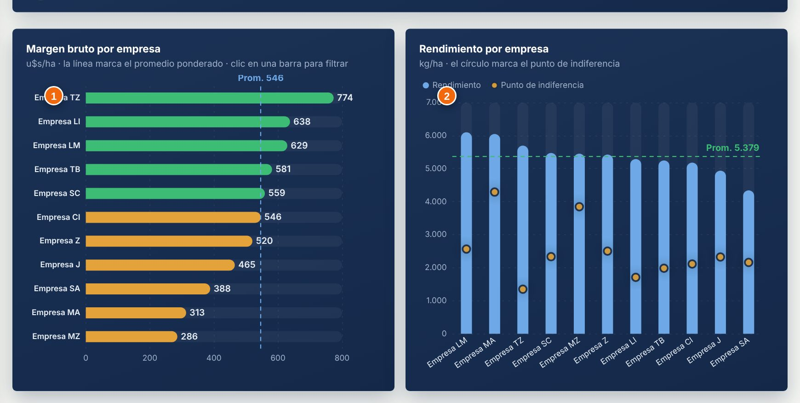
- Margen bruto por empresa (o por sub-zona, zona o región). Las barras van de mayor a menor. La línea vertical marca el promedio ponderado. verde = por encima del promedio; ámbar = por debajo; rojo = margen negativo. Pasando el mouse se ve el detalle: superficie, rinde, ingreso, gastos, margen y arriendo. Clic en una barra = filtrar.
- Rendimiento por empresa, de mayor a menor, con la línea del rinde promedio. El círculo sobre cada barra es el punto de indiferencia: los kg/ha que hacen falta para pagar los gastos directos con la cotización elegida. Cuanto más lejos está el círculo de la punta de la barra, más «colchón» tiene esa empresa.
6Análisis
La vista Análisis escribe sola los hallazgos y conclusiones de lo que filtraste. Cambia según el filtro:
| Si filtrás… | Te muestra |
|---|---|
| Nada, o varios valores | El análisis general de la selección: quién lidera, qué pesa más (costos o rinde), quién gasta de más, quién concentra la superficie, la brecha entre el mejor y el peor y la estructura de gastos. |
| Un solo cliente | El análisis de ese cliente comparado contra el total. |
| Un cliente + una sub-zona | Lo mismo, y además contra el promedio de esa sub-zona. |
| Un establecimiento | El análisis de ese establecimiento contra el total. |
| Una sola sub-zona, zona o región | El análisis de ese grupo contra el total y por dentro. |
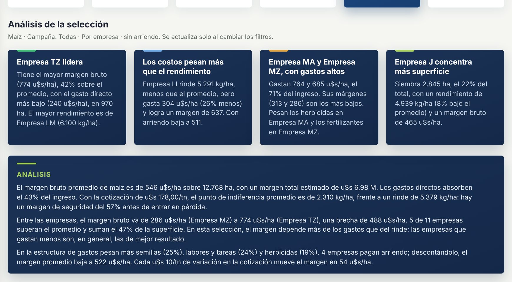
Análisis de un cliente
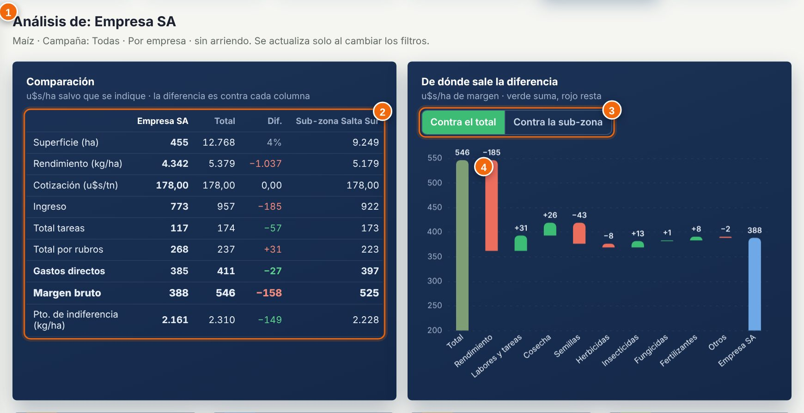
- Título: qué se está analizando.
- Comparación: los números del cliente, del total y de la sub-zona, con la diferencia. En la columna «Dif.», verde es a favor del cliente (rinde más, gasta menos, gana más) y rojo en contra.
- Contra el total / Contra la sub-zona: cambia contra qué se arma el gráfico de al lado.
- De dónde sale la diferencia: arranca en el margen del total (barra gris verdosa), suma o resta lo que aporta cada cosa y termina en el margen del cliente (barra celeste). verde = le suma margen frente al total; rojo = le resta. «Rendimiento» es lo que gana o pierde por rendir distinto; cada rubro es lo que gana o pierde por gastar menos o más en él.
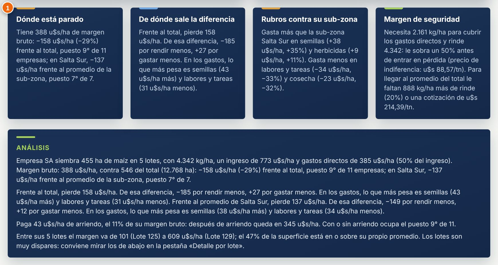
Debajo, cuatro tarjetas y el análisis escrito:
- Dónde está parado: su margen, la diferencia con el total y el puesto en el ranking (y en su sub-zona, si la filtraste).
- De dónde sale la diferencia: cuánto se explica por el rinde y cuánto por los gastos, y los dos rubros que más mueven.
- Rubros: en qué gasta más y en qué gasta menos que su sub-zona (o que el total), en u$s/ha y en %.
- Margen de seguridad: cuánto rinde le sobra antes de perder plata, el precio de indiferencia y cuántos kg/ha o qué cotización le faltan para llegar al promedio.
- En el texto también aparecen el arriendo (cuánto le come del margen y si le cambia el puesto), el mejor y el peor establecimiento y lote, qué tan parejos son sus lotes y, si hay más de una campaña, cómo evolucionó.
Análisis de una sub-zona, zona o región
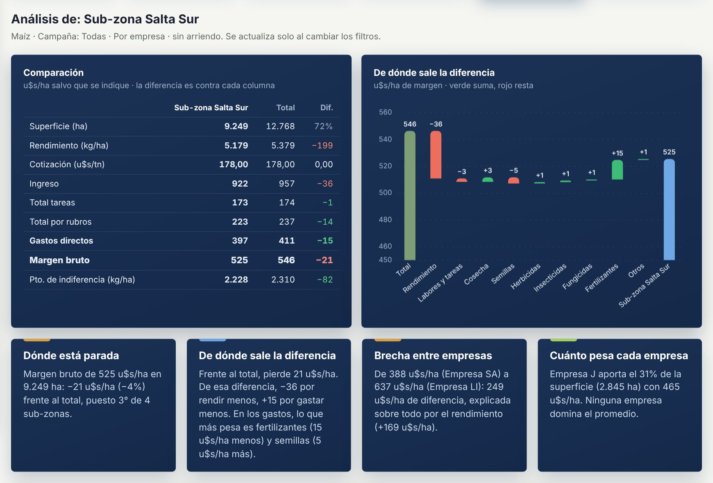
- Dónde está parada: margen, diferencia con el total y puesto entre las sub-zonas (o zonas, o regiones).
- Brecha entre la mejor y la peor empresa (o sub-zona) de adentro, y si la explica el rinde o los gastos.
- Cuánto pesa cada empresa: si una empresa grande «tira» el promedio, dice cuánto daría sin ella.
- El texto agrega el ranking de adentro, los rubros que más cambian entre empresas (dónde hay más para mejorar), el arriendo y la evolución por campaña.
7Análisis por Cliente
Una vista solo de gráficos para mirar a un cliente por dentro, sin compararlo con otros: sus indicadores, sus costos, su rinde, su arriendo, sus establecimientos y su evolución. Usa los filtros de arriba (cultivo, campaña, región, zona, sub-zona, asesor, margen y cotización) y suma dos controles propios.
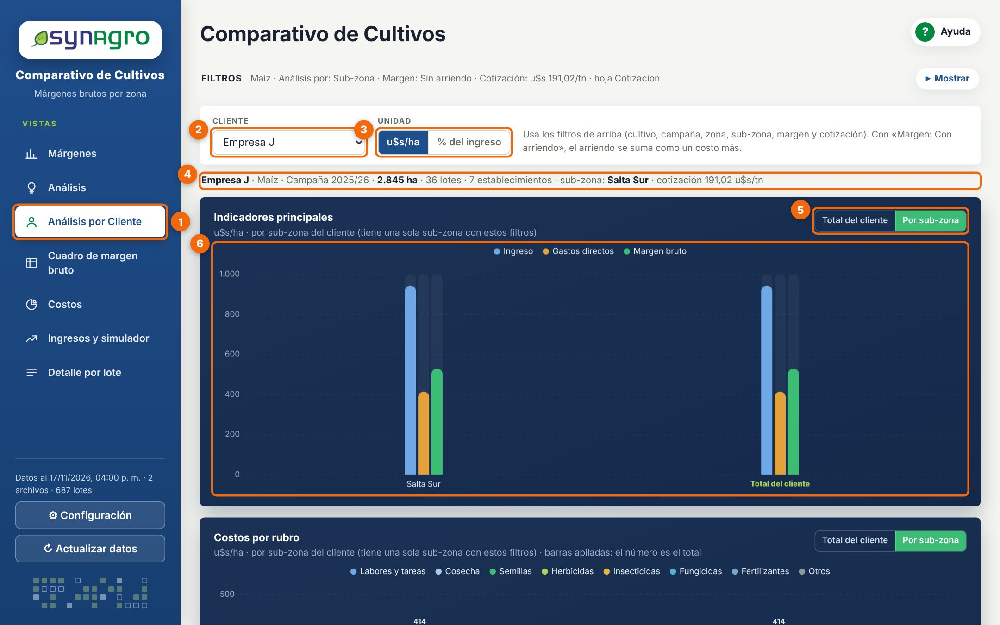
- Análisis por Cliente. La vista nueva del menú. En esta vista no se muestran las tarjetas de indicadores de arriba: todo está en los gráficos.
- Cliente. Elegí el cliente a analizar. La lista trae los clientes que quedan con los filtros de arriba. Si en el filtro Empresa elegiste un solo cliente, arranca con ese.
- Unidad. u$s/ha o % del ingreso (cuánto de cada peso que entra se va en cada cosa). El rendimiento siempre se muestra en kg/ha.
- Resumen. Cultivo, campaña, hectáreas, lotes, establecimientos, sub-zonas donde tiene lotes y cotización usada.
- Total del cliente / Por sub-zona. Cambia el eje de abajo del gráfico. Por sub-zona (así arranca) abre al cliente en cada sub-zona donde tiene lotes, más una columna Total del cliente en verde. Total del cliente muestra un solo número por indicador. Si el cliente tiene una sola sub-zona con esos filtros, el gráfico lo avisa (la sub-zona y el total dan igual).
- Indicadores principales. Ingreso, gastos directos y margen bruto. Con «Margen: Con arriendo» se suman Arriendo, Gastos directos + arriendo y Margen después de arriendo.
Costos, rinde y arriendo
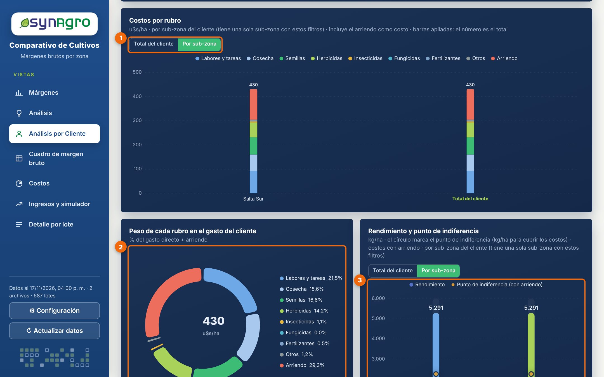
- Costos por rubro. Labores y tareas, cosecha, semillas, herbicidas, insecticidas, fungicidas, fertilizantes y otros. Por sub-zona se ven apilados y el número de arriba es el total; Total del cliente muestra una barra por rubro.
- Peso de cada rubro. Qué porcentaje del gasto del cliente se lleva cada rubro. En el centro, el gasto total.
- Rendimiento y punto de indiferencia. La barra es el rinde y el círculo, los kg/ha que necesita para cubrir los costos. En «% del ingreso» muestra el % de incidencia.
Arriendo, establecimientos y campañas
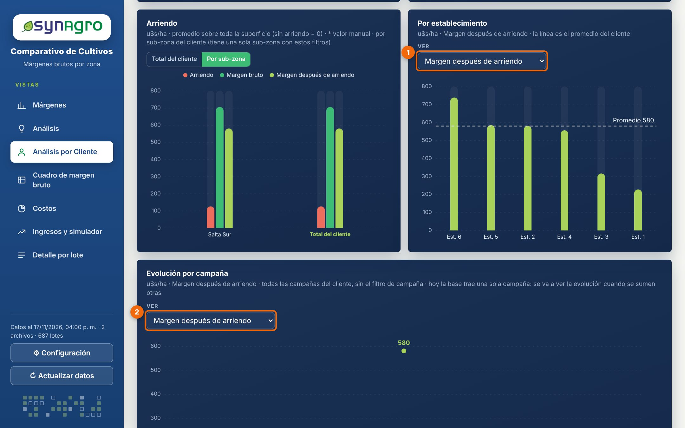
- Por establecimiento. Elegí qué ver (rendimiento, ingreso, gastos, arriendo o margen) y compará los establecimientos del cliente, ordenados de mayor a menor. La línea punteada es el promedio del cliente.
- Evolución por campaña. El mismo indicador, campaña por campaña. Usa todas las campañas del cliente aunque hayas filtrado una, y respeta los demás filtros. Hoy la base trae una sola campaña (2025/26), así que se ve un solo punto: la línea aparece cuando se sumen otras.
El gráfico Arriendo muestra el arriendo, el margen bruto y el margen después de arriendo, también por sub-zona o en total. Si el cliente no tiene arriendo cargado, lo avisa.
8Cuadro de margen bruto
Es la réplica de la planilla de margen bruto: una columna por empresa (o por grupo) y la columna del promedio.
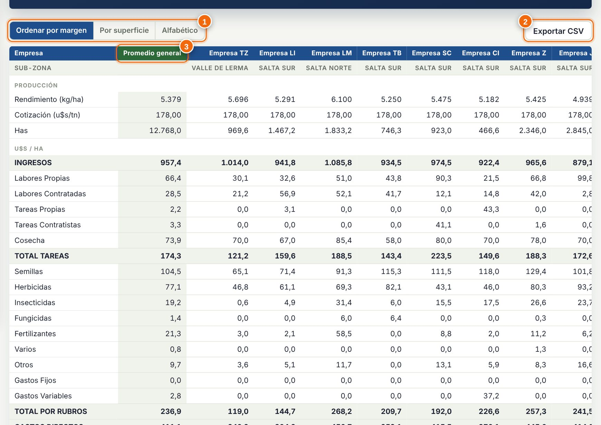
- Orden de las columnas: por margen (de mayor a menor), por superficie o alfabético.
- Exportar CSV: baja el cuadro para abrirlo en Excel.
- Promedio general: promedio ponderado por superficie de la selección.
- Producción: rendimiento, cotización y hectáreas.
- u$s/ha: ingresos; labores propias y contratadas, tareas propias y contratistas y cosecha (= Total tareas); semillas, herbicidas, insecticidas, fungicidas, fertilizantes, varios, otros, gastos fijos y variables (= Total por rubros); Gastos directos = Total tareas + Total por rubros; y el Margen bruto.
- Con «Con arriendo» se agregan las filas Arriendo y Margen bruto después de arriendo.
- Indicadores: punto de indiferencia (kg/ha) y % de incidencia (qué parte del rinde se necesita para cubrir los gastos).
- En la fila del margen, las celdas en verde están sobre el promedio y en ámbar, debajo.
- Para recorrer el cuadro, mantené apretado el clic izquierdo y arrastrá (en el celular, deslizá con el dedo). Los nombres de las empresas, la sub-zona y las columnas de rubros y Promedio general quedan fijos, así siempre sabés qué estás mirando.
9Costos
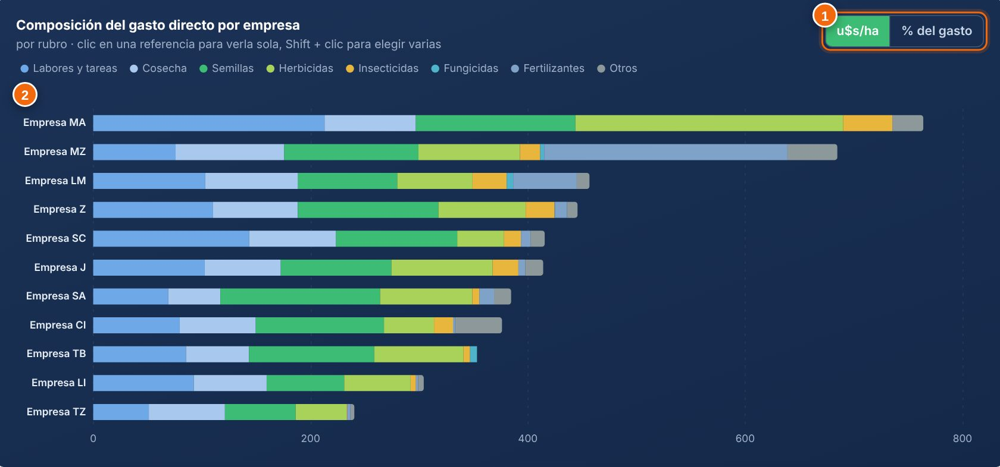
- u$s/ha o % del gasto: en u$s/ha se compara cuánto gasta cada uno; en %, cómo reparte su gasto (por ejemplo, quién destina más a semillas).
- Composición del gasto directo: una barra por empresa, ordenadas de menor a mayor gasto, partida por rubro. Pasando el mouse se ven los valores. Clic en una barra = filtrar.
Usar las leyendas para ver solo algunos rubros
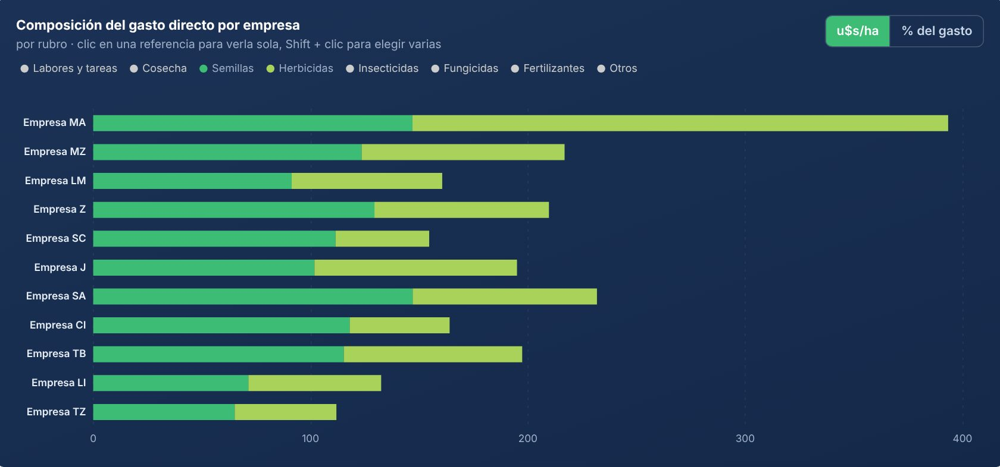
- Clic en una referencia (por ejemplo «Semillas»): el gráfico muestra solo ese rubro.
- Shift + clic (o Ctrl + clic) en otras referencias: las suma a la selección. Shift + clic sobre una ya elegida la saca.
- Clic sobre la única referencia que quedó: vuelven a verse todas.
- Funciona igual en todos los gráficos con referencias (la dona, la dispersión, el simulador). La selección se mantiene aunque cambies los filtros.
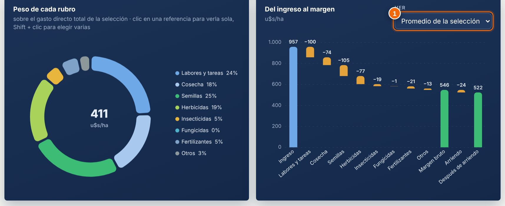
- Peso de cada rubro: la dona reparte el gasto directo de toda la selección; en el centro, el gasto total en u$s/ha.
- Del ingreso al margen: parte del ingreso, resta rubro por rubro y llega al margen bruto (y, con arriendo, al margen después de arriendo). Con el selector ① «Ver» elegís el promedio de la selección o una empresa en particular.
10Ingresos y simulador
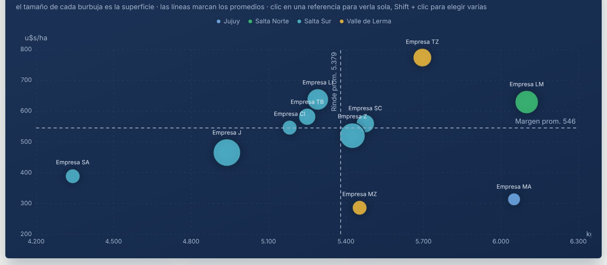
Rendimiento vs. margen: cada burbuja es una empresa (o grupo). Más a la derecha = más rinde; más arriba = más margen; más grande = más hectáreas. Cuando analizás por empresa, los colores son las sub-zonas. Las líneas punteadas marcan los promedios y arman cuatro cuadrantes:
- Arriba a la derecha: rinde más y gana más.
- Arriba a la izquierda: rinde menos pero gana más → gasta bien.
- Abajo a la derecha: rinde más pero gana menos → gasta de más.
- Abajo a la izquierda: rinde menos y gana menos.
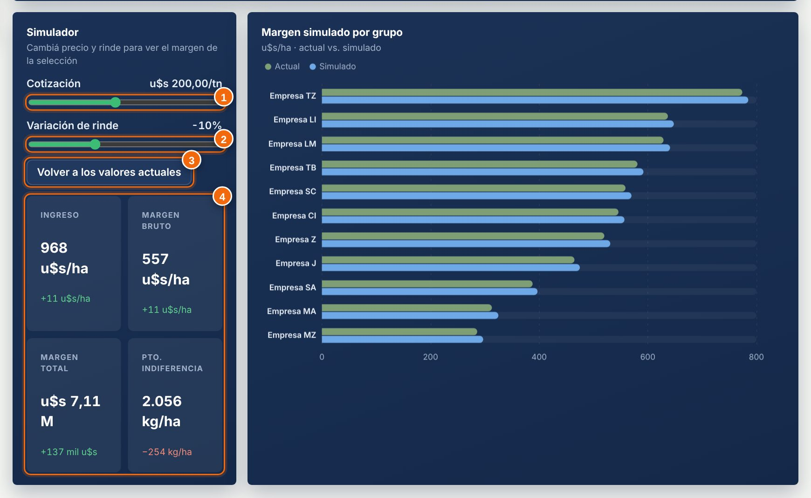
- Cotización: mové la barra para simular otro precio (de u$s 120 a 300/tn). Con «Ingreso / rinde», cada empresa conserva su propio precio y la barra los sube o baja a todos en la misma proporción.
- Variación de rinde: de −30% a +30% sobre el rinde real (útil para simular un año seco o uno muy bueno).
- Volver a los valores actuales.
- Resultados de la selección: ingreso, margen, margen total y punto de indiferencia simulados, con la diferencia contra el valor actual. A la derecha, el margen actual (verde) y el simulado (azul) de cada empresa.
11Detalle por lote
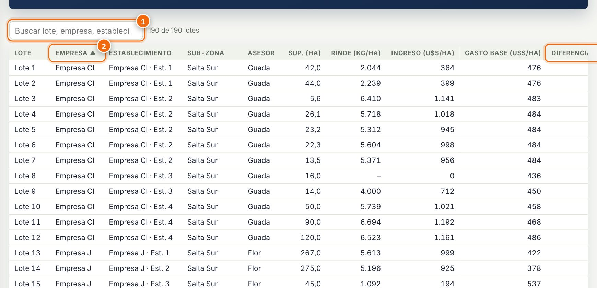
- Buscar: escribí parte del lote, la empresa, el establecimiento, la sub-zona o el asesor. Al lado dice cuántos lotes coinciden.
- Ordenar: clic en el título de cualquier columna; otro clic invierte el orden (▲/▼).
- Diferencia: ingreso − gasto base de cada lote. En rojo, los lotes con resultado negativo. El ingreso del lote sigue la opción Cotización según: con «Ingreso / rinde» es el de la base; con «Hoja o manual», rinde × la cotización elegida.
12Informe PDF y CSV
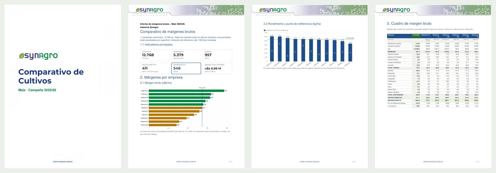
- Descargar informe PDF arma un informe A4 con formato Synagro de unas 7 páginas: portada, indicadores, márgenes, rendimiento y punto de indiferencia, cuadro de margen bruto, estructura de costos, y rendimiento y margen.
- Respeta todo lo que tengas elegido: filtros, «Analizar por», con o sin arriendo, cotización y modo anónimo. Si el modo anónimo está activado, el nombre del archivo termina en «_anonimo».
- No incluye los textos de la vista Análisis.
- Exportar CSV (en el Cuadro de margen bruto) baja la misma tabla para trabajarla en Excel.
13Actualizar datos y calidad de datos
Actualizar datos
- Al abrir la página, los datos se cargan solos. El servidor guarda una copia por unos minutos para que abra rápido.
- El botón Actualizar datos (abajo del menú) fuerza una lectura nueva de la carpeta de Drive. Usalo después de subir un Excel. Los filtros que tenías se mantienen.
- Si el servidor no responde, la página muestra los últimos datos guardados y lo avisa en amarillo arriba del botón.
Para los asesores: cómo sumar datos nuevos
- Armá el Excel con la hoja Base Cultivos (una fila por lote) con las columnas de siempre, incluida Abreviatura (el código de la empresa) y el Ingreso de cada lote en u$s/ha (se usa con «Cotización según: Ingreso / rinde»; si queda en 0, ese lote toma la cotización de la hoja). Si corresponde, completá también las hojas Cotizacion y Arriendo.
- Subilo a la carpeta de Drive del comparativo. El nombre del archivo no importa (no empieces el nombre con «_» ni «~», porque esos archivos se ignoran).
- Abrí el dashboard y tocá Actualizar datos. Una campaña, cultivo o cliente nuevo aparecen solos en los filtros.
- Revisá Calidad de datos por si hay algo para corregir.
Calidad de datos
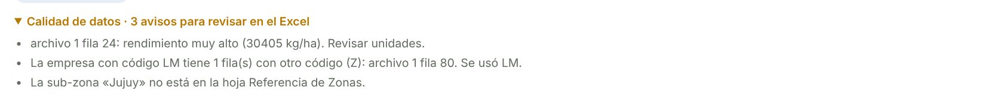
Avisos que conviene corregir en el Excel. No frenan el dashboard, pero pueden distorsionar algún número. Por ejemplo: una sub-zona que no está en la hoja Referencia de Zonas, una empresa sin código o con dos códigos, un cultivo y campaña sin cotización, o rendimientos fuera de rango. Si un archivo no tiene la hoja Base Cultivos o le falta una columna obligatoria, se descarta y se avisa, sin afectar a los demás.
14Configuración y administración de empresas
El botón ⚙ Configuración está en el menú azul, arriba de Actualizar datos (en el celular, dentro del menú ☰). Abre un panel con dos partes: Mis preferencias, que puede usar cualquiera, y Administración de empresas, que necesita la clave.
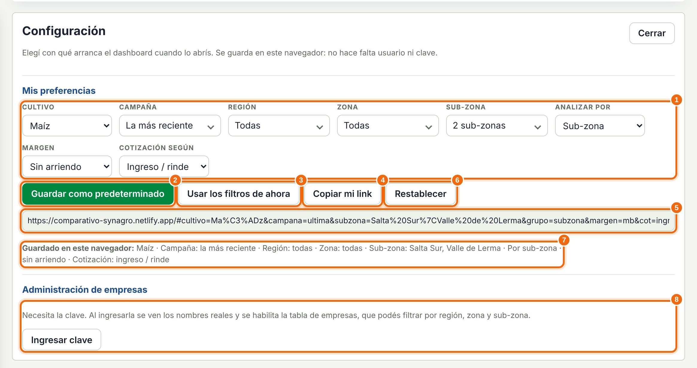
- Mis preferencias. Con qué arranca el dashboard: cultivo, campaña, región, zona, sub-zona, «Analizar por», margen (con o sin arriendo) y cotización según (hoja o manual / ingreso ÷ rinde). Región, zona y sub-zona van encadenadas: si elegís una región, la lista de zonas muestra solo las de esa región, y lo mismo pasa con las sub-zonas.
- Guardar como predeterminado. Desde ese momento, cada vez que abras el dashboard en este navegador arranca así. Los filtros se pueden seguir cambiando como siempre.
- Usar los filtros de ahora. Copia al formulario lo que tenés filtrado en este momento. Es la forma más rápida: armá la vista que te gusta, tocá este botón y después Guardar.
- Copiar mi link. Copia un link que abre el dashboard con esta configuración (ver Tu link).
- El link. Queda a la vista por si preferís copiarlo a mano.
- Restablecer. Borra tu configuración y el dashboard vuelve a arrancar con la general: Maíz, todas las campañas y zonas, por sub-zona, sin arriendo y con la cotización de la hoja.
- Qué tenés guardado. Un resumen de la configuración guardada en este navegador.
- Administración de empresas. Sin la clave muestra el botón Ingresar clave; con la clave aparece la tabla de empresas (ver más abajo).
Mis preferencias
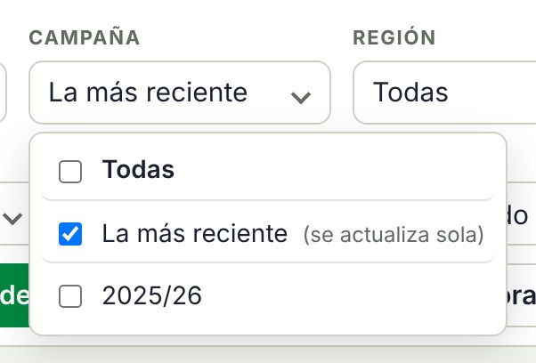
- Se guarda en el navegador, no en una cuenta: no hace falta usuario ni clave. Cada persona tiene la suya y no le cambia nada a los demás.
- Si usás el dashboard en la compu y en el celular, se configura una vez en cada uno, o se usa tu link en los dos.
- Si borrás los datos de navegación o usás una ventana de incógnito, la configuración no se guarda. El link sigue funcionando igual.
- Si algo de lo guardado ya no existe en los datos (por ejemplo, una sub-zona que dejó de cargarse), esa parte se ignora y el resto se aplica igual.
Tu link
- El link lleva tu configuración adentro. Sirve para guardarlo en favoritos, tenerlo en el celular o mandarlo por WhatsApp a un compañero, que lo abre con esa misma vista.
- Solo lleva cultivo, campaña, región, zona, sub-zona, «Analizar por», margen y de dónde sale la cotización: nunca nombres de clientes. Un precio escrito a mano no viaja en el link.
- Al abrir el dashboard, primero manda el link, después lo que tengas guardado en el navegador y, si no hay nada, la configuración general.
Administrar empresas (solo con clave)
Con la clave, al desactivar el modo anónimo (o con Ingresar clave en Configuración) se habilita la tabla de empresas, también desde el botón Administrar empresas de los filtros. Arriba de la tabla hay un filtro de región, zona y sub-zona que arranca con tus preferencias, para ver solo los clientes de tu zona. Podés elegir todas, una o varias.
Una fila por empresa:
| Columna | Para qué sirve |
|---|---|
| Código | El de la columna Abreviatura del Excel. Se cambia en el Excel. |
| Nombre de referencia | Cómo se muestra al público si se habilita (ej.: «Cliente Metán 1»). Máximo 40 caracteres. Si es igual al nombre real, la página avisa antes de guardar. |
| Mostrar al público | No: el público ve «Empresa + código». Sí: ve el nombre de referencia. Ojo: con «Sí» y el nombre de referencia vacío, el público ve el nombre real. |
| Arriendo manual | Por campaña y sub-zona, en u$s/ha. Vacío = usar la hoja Arriendo; 0 = sin arriendo; un número = ese valor. Se marca con * en el cuadro y el PDF. |
| Cosecha | Por campaña, dos montos en u$s/ha: Propia y Contratada (ver abajo). |
Cargar la cosecha
El costo de cosecha no sale del Excel: viene metido dentro de las labores. Se carga acá, por empresa y campaña, y vale para todos los cultivos de esa campaña.
- En la columna Cosecha u$s/ha por campaña, buscá la campaña.
- Escribí el monto en Propia (cosecha con máquina propia), en Contratada (cosecha con contratista) o en las dos, si la empresa usó las dos. El campo que no corresponda dejalo vacío.
- Mirá la línea de abajo: muestra las labores propias y contratadas que tiene la empresa y la cosecha total. El cuadro se actualiza en el momento, antes de guardar.
- Tocá Guardar cambios.
- Propia se resta de Labores Propias y Contratada, de Labores Contratadas. La fila Cosecha del cuadro muestra la suma.
- El margen bruto no cambia: la cosecha solo pasa de la fila de labores a la fila Cosecha.
- Un monto no puede ser mayor que la labor de la que se resta, porque la labor quedaría en negativo. En ese caso el campo se marca en rojo y no se puede guardar. Si la empresa tiene varios cultivos en la campaña, se toma la labor más baja entre ellos.
- Ambos campos vacíos = sin cosecha cargada: la fila Cosecha queda en 0 y las labores no se tocan. Para sacar una cosecha, borrá los dos montos y guardá.
Al tocar Guardar cambios (te pide tu nombre), los cambios quedan en la hoja de configuración de Drive y los ve todo el que abra el link. Cada cambio queda registrado en un historial con fecha, autor, valor anterior y nuevo.
15En el celular
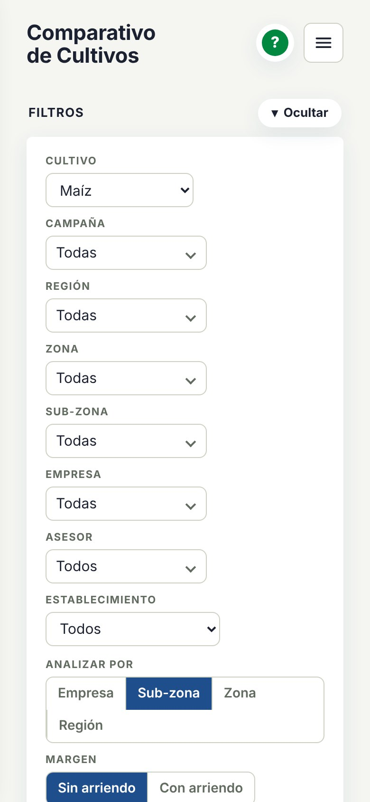
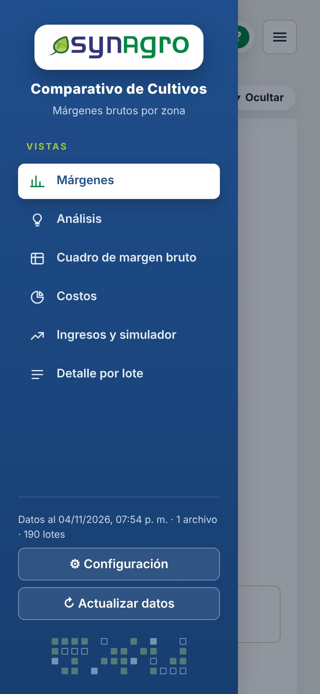
El dashboard se adapta al celular. Las vistas y los botones Configuración y Actualizar datos están en el menú (☰, arriba a la derecha); el «?» abre esta ayuda. Los gráficos se pueden tocar para ver los valores.
16Glosario y cómo se calcula cada número
| Término | Qué es / cómo se calcula |
|---|---|
| Promedio ponderado | Cada empresa pesa según sus hectáreas: Σ(valor × ha) ÷ Σ ha. Se usa para todos los promedios. |
| Rendimiento | kg/ha promedio de los lotes, ponderado por superficie. Un lote sin rinde cargado cuenta como 0. |
| Cotización | Precio en u$s/tn. Con «Hoja o manual»: el de la hoja Cotizacion por cultivo y campaña (promedio CAC-BCR) o el que escribas a mano. Con «Ingreso / rinde»: Σ(ingreso × ha) ÷ Σ(rinde × ha) × 1.000 de los lotes de esa empresa, sub-zona, zona o región. |
| Ingreso | u$s/ha. Con «Hoja o manual»: rendimiento × cotización ÷ 1.000. Con «Ingreso / rinde»: la columna Ingreso de la base; si es 0, rendimiento × cotización de la hoja ÷ 1.000. |
| Total tareas | Labores propias + labores contratadas + tareas propias + tareas contratistas + cosecha. |
| Total por rubros | Semillas + herbicidas + insecticidas + fungicidas + fertilizantes + varios + otros + gastos fijos + gastos variables. |
| Gastos directos | Total tareas + total por rubros. No incluye el arriendo. |
| Margen bruto (MB) | Ingreso − gastos directos (u$s/ha). |
| Arriendo | u$s/ha por empresa, sub-zona y campaña (panel de administración o hoja Arriendo). |
| Margen después de arriendo | Margen bruto − arriendo. |
| Gastos directos + arriendo | Solo en Análisis por Cliente con «Margen: Con arriendo»: los gastos directos más el arriendo. Con esa suma se calculan el peso de cada rubro, el punto de indiferencia y el % de incidencia de esa vista. |
| Margen total | Σ(margen × ha): dólares totales que deja la selección. |
| Punto de indiferencia | Gastos directos ÷ cotización × 1.000. Los kg/ha necesarios para cubrir los gastos directos. |
| % Incidencia | Punto de indiferencia ÷ rendimiento. Qué parte de la cosecha se va en pagar los gastos. |
| Margen de seguridad | (Rinde − punto de indiferencia) ÷ rinde. Cuánto podría caer el rinde antes de dar pérdida. |
| Precio de indiferencia | La cotización a la que el margen sería 0 con el rinde actual. |
| Cosecha | Cosecha propia + cosecha contratada, cargadas en el panel por empresa y campaña. La propia se resta de Labores Propias y la contratada, de Labores Contratadas, para no contarla dos veces. |
17Recetas rápidas
Preparar la reunión con un cliente
- Filtrá su Empresa y su Sub-zona.
- Abrí Análisis: ahí tenés su puesto, de dónde sale la diferencia con el total y con su sub-zona, y en qué rubros gasta de más.
- En Análisis por Cliente, elegilo y mirá sus costos, su rinde y sus establecimientos, sub-zona por sub-zona.
- En Detalle por lote, ordená por «Diferencia» para ver sus peores lotes.
- Si querés llevarle algo impreso, activá el modo anónimo y descargá el PDF.
Que el dashboard abra siempre en tu zona
- Filtrá tu Sub-zona (o zona, o región), elegí «Analizar por» y el margen que más usás.
- Tocá ⚙ Configuración → Usar los filtros de ahora. En Campaña marcá La más reciente.
- Tocá Guardar como predeterminado. Para tenerlo también en el celular, tocá Copiar mi link y mandátelo.
Comparar sub-zonas entre sí
- Analizar por: Sub-zona (el dashboard ya arranca así).
- Mirá Márgenes y el Cuadro de margen bruto: cada columna es una sub-zona.
- Para entender una en particular, elegila en el filtro Sub-zona y abrí Análisis.
Ver qué pasa con otro precio
- Escribí la cotización en el casillero Cotización u$s/tn: todo se recalcula (pasa solo a «Hoja o manual»).
- O usá el Simulador para mover precio y rinde sin tocar el resto.
- Tocá «Usar la de la hoja» para volver.
Ver a qué precio calculó el ingreso cada cliente
- En Cotización según, elegí Ingreso / rinde.
- Analizar por: Empresa y abrí el Cuadro de margen bruto: la fila Cotización muestra el precio de cada una.
- Ordená o compará contra la hoja: una cotización muy por debajo o por encima del resto suele ser un ingreso mal cargado en el Excel. En Detalle por lote buscás el lote puntual.
Ver el impacto del arriendo
- Elegí Margen: Con arriendo.
- Mirá la tarjeta Arriendo y cómo cambia el ranking en Márgenes.
- En Costos → Del ingreso al margen aparece el escalón del arriendo.
- En Análisis por Cliente el arriendo se suma como un rubro más, para ver cuánto pesa en el gasto de ese cliente.
Comparar solo un par de rubros
- Andá a Costos.
- Clic en «Semillas» en la leyenda, y Shift + clic en «Fertilizantes».
- Pasá a «% del gasto» para ver qué parte del gasto le dedica cada uno.
18Preguntas frecuentes
¿Por qué los números no coinciden con mi planilla?
Revisá que estén los mismos filtros (cultivo, campaña, empresas), la misma cotización (y si sale de la hoja o del ingreso) y si estás «Con» o «Sin arriendo». Los promedios son siempre ponderados por hectárea, y la cosecha es la que se cargó en el panel (se resta de las labores, así que esas dos filas pueden no coincidir con el Excel).
¿Por qué la cotización es distinta en cada empresa?
Porque está elegido Cotización según: Ingreso / rinde: el precio sale del ingreso cargado en cada lote (ingreso ÷ rinde × 1.000). Si querés el mismo precio para todos, elegí Hoja o manual. Si una empresa da muy distinto del resto, revisá la columna Ingreso de sus lotes en el Excel.
Abajo dice que «N lotes sin ingreso usan la hoja Cotizacion».
Esos lotes tienen la columna Ingreso en 0, así que con «Ingreso / rinde» se calculan con la cotización de la hoja. Cuando se cargue su ingreso en el Excel y se toque Actualizar datos, pasan a usar su propio precio.
La fila Cosecha está en 0 o abajo del cuadro dice «no tiene cosecha cargada».
A esa empresa todavía no se le cargó la cosecha de esa campaña. Con la clave, entrá a Administrar empresas y cargá el monto propio, el contratado o los dos. Mientras tanto, el costo de cosecha queda dentro de las labores y el margen bruto es el mismo.
No me deja guardar la cosecha.
El monto es mayor que las labores de las que se resta: la línea en rojo dice cuánto hay disponible. Revisá si va en Propia o en Contratada, o repartilo entre las dos.
Subí un Excel y no aparece.
Tocá Actualizar datos. Si sigue sin aparecer, mirá Calidad de datos: puede que al archivo le falte la hoja Base Cultivos o alguna columna, o que su nombre empiece con «_» o «~».
Aparece «Empresa N1» o un código raro.
Es una empresa sin código en la columna Abreviatura. Se le asigna uno provisorio hasta que se cargue en el Excel.
Un gráfico quedó mostrando un solo rubro.
Se tocó una referencia de la leyenda. Hacé clic sobre la referencia que quedó y vuelven todas.
¿Puedo mandar el link a un cliente?
Sí. Sin la clave solo se ven códigos o los nombres de referencia que se hayan habilitado. El cliente ve a todas las empresas en forma anónima.
Guardé mi configuración y en el celular no aparece.
La configuración se guarda en cada navegador. En el celular, guardala de nuevo o abrí tu link.
Abrí un link y no arrancó con mi configuración.
Si el link trae una configuración, esa tiene prioridad. Tocá Mi configuración (al lado de «Limpiar filtros») para volver a la tuya, o abrí el dashboard con el link común.
En Análisis por Cliente no veo las tarjetas de indicadores.
Es a propósito: esa vista es solo de gráficos y los indicadores del cliente están en el primer gráfico. Al volver a cualquier otra vista, las tarjetas aparecen de nuevo.
En Análisis por Cliente, «Por sub-zona» y «Total del cliente» dan igual.
Pasa cuando el cliente tiene lotes en una sola sub-zona con los filtros elegidos. El gráfico lo avisa en el subtítulo.
Dice «Sin conexión con Drive».
El servidor no respondió y se muestran los últimos datos guardados. Probá en un rato con Actualizar datos.
Synagro · Comparativo de Cultivos · comparativo-synagro.netlify.app